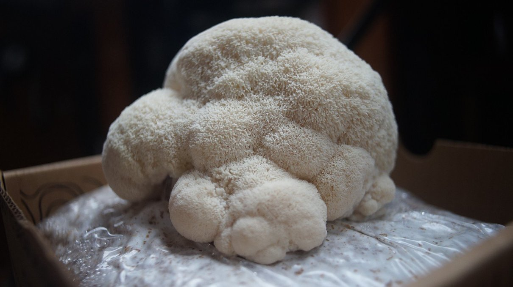
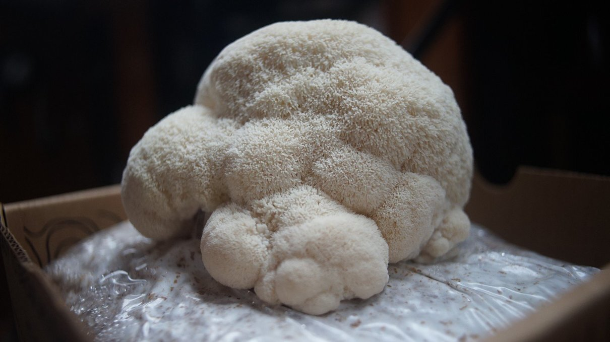

growing food

Growing food aboard is possible. Keeping soil aboard is not practical for a small vessel, but sprouting is a good alternative.
Mushrooms
We experimented with growing lion's mane from a kit made by a local company, it worked surprisingly well!
 


Regrowing foods
Some vegetables can regrow from cuttings, like leek, cabbage, green onions, chives etc. Although we don't keep them in soil anymore, they'll re-grow if kept in water. You only need enough water to cover the roots.

When you buy a pot of basil, you are not buying one plant, but a tightly sown clump of more than 20 seedlings.
This gives the appearance of an extremely healthy, bushy plant, which looks great on the shelf. But the reality is that these seedlings soon start to compete with each other for space, causing the plants in the clump to succumb to lack nutrients.
To fix this, take the clump of plants and divide the root ball into quarters by gently tearing it apart with your fingers.